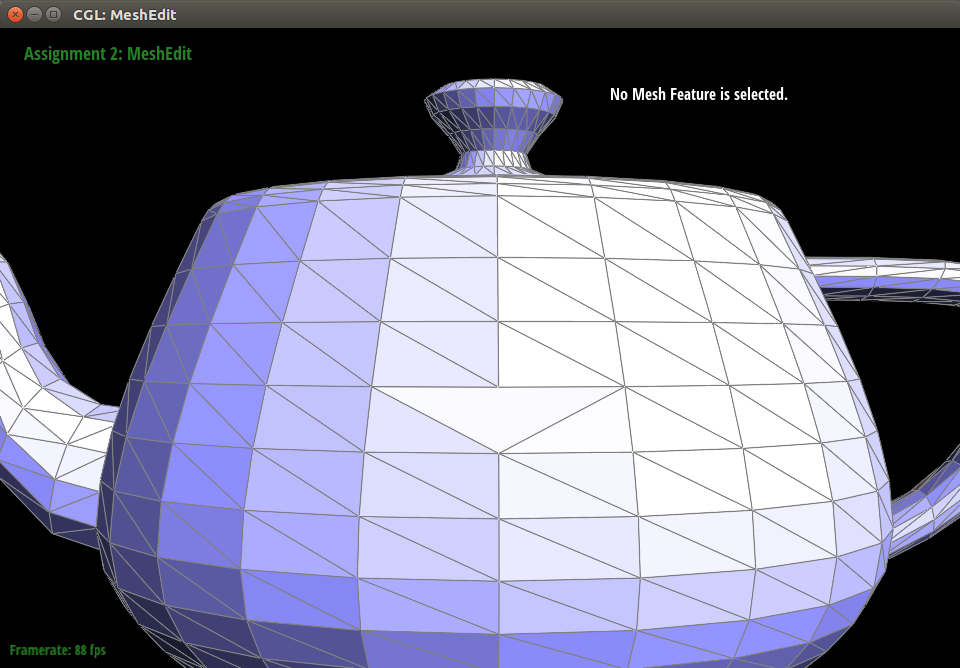

The website of this write up is: online write up
Overview
In this project, we focus on two basic topics. First, we finished the Bezier curves and surfaces with 1D de Casteljau Subdivision. In the second part, we completed several steps of flip, split and upsampling for the meshes for subdivision. These basic knowledge provides the fundation of rendering and modifying objects.
Section I: Bezier Curves and Surfaces
Part 1: Bezier curves with 1D de Casteljau subdivision
Bezier Curves with 1D de Casteljau Subdivision uses an iterative method to interpolate every pairs control point with parameter t. If we have n control points, we need to interpolate (n-1) times until the last point. Then we can scan t from 0 to 1 and generate the curve. This curve is the expected Bezier Curve.
|
|
|
|
|
|
|
|
Here we create a 6-point Bezier curve, and sequentially interpolate the midpoint of control points. The above figures are interpolation at different levels. Finally, we connect the point with varying t and show the completed Bezier curve.
We now change the position of control points a little bit and also change the t value using mouse scrolling. We can find that the interpolated points are closer to the right control point.
Part 2: Bezier surfaces with separable 1D de Casteljau subdivision
The Bezier surface using de Casteljau's algorithm is very similar to Bezier curve. In this project, we need to render a 3D teapot. The data structure is just like a 2D matrix whose rows and columns are horizontal and vertical control points. We need to first iterate each row of the control points and apply the linear Bezier curve interpolation just like in the part 1. Then we store all interpolated points as columns and then apply linear Bezier curve again.
By applying the interpolation twice and scan t from 0 to 1, actually we are able to cover all the surface of the given control points. This figure above shows the result of rendering a teapot using Bezier surface.
Section II: Sampling
Part 3: Average normals for half-edge meshes
The algorithm is applied to a specific vertex to get the smooth surface. To implement the area-weighted vertex normals, we apply the following steps.
- Using the halfedge of the current vertex, iterate all halfedges start from this vertex.
- Each halfedge points to a specific face and two corresponding other vertices that formulate the triangle.
- Using three vertices of each triangle to calculate the normal direction and face area by cross product.
- Sum up the normal direction weighted by the area and finally normalize the normal vector.

|
|
The previous two figures show the smoothing of a teapot. The left figure is before the smoothing, we can easily find that each triangle face is only a plane, so the edges are very rigid. After smoothing, the right figure looks like a polished surface. This allows the shader to compute lighting on the surface. Therefore, this method is very useful to make a continuous and smooth surface.
Part 4: Half-edge flip
Flipping one edge requires us to carefully reconstruct the halfedge iterator and some corresponding faces and vertices. Before implement the flip, we will first skip the boundary edge, and only return itself.
Now I list the changes we made for this algorithm. Basically, we flip the triangle abc to adc; and another triangle is symmetric. So, here I only list the operation for one triangle, and the other one is just similar.

- Formulate new halfedge had. next=hdc, twin=hda, vertex=va, edge=ead, face=adc
- Reassign for halfedge hca. next=had, face=adc
- Reassign for halfedge hdc. face=adc
- Reassign for vertex c. face=abc
- Reassign for face adc. halfedge = had
- Reassign for edge ead. halfedge = had
The notations had means halfedge a to d. ead means edge ad. va mean vertex a. But for triangles, we direct call it abc. We will do the same process to the triangle dcb to dab, while they are symmetric.
|
|
|
These two figures depitc the edge flip process. The left figure is the original teapot. Then we choose two edges and press 'F' to see the flipping results. Then if we try many times, and results are very stable.
Part 5: Half-edge split
In this edge split task, we need to create new elements and connect them correspondingly. Basically, we need to have in total 8 inner halfedge, 4 outer halfedge, 4 edges, 4 faces and 4 vertices.
From the above figure, we also know that the new formulation is totally symmetric, and we will implement same process four times. So we can store all elemens sequentially in some vectors and iterate then four times. Here I will also only introduce the manipulations in the left upper triangle amc.
- Construct halfedge hmc. next=hca, twin=hcm, face=amc, vertex=vm.
- Construct halfedge ham. next=hmc, twin=hma, face=amc, vertex=va.
- Reassign halfedge hca. next=ham, face=amc.
- Reassign edge emc. halfedge=hmc.
- Reassign face amc. halfedge=hmc.
- Reassign vertex vc. halfedge=hca.
- In addition, assign once for vm. position=(vb + vc)/2, halfedge=hmc.
We apply the rule 1 - 6 four times for each triangle, and implement 7 once. Finally, we return the vertex vm and get the correct results. Make sure that we did not create unused elements. If we create extra elements, we need to delete then afterwards, while a better way is to only create enough amount of elements and reassign the pointers.
|
|
|
The above two figures are applying split and flip operations. We only apply split to the left figure and it is very successful. Then we combined the flip and split to mess up the gird on the teapot surface and create a very strange texture but it can still work well.
Potential bugs and the explanation
|

|
|
However, if we carefully choose some unreasonable operations, the results could be somehow wrong. When we arbtrially apply flip and split operations, there are two interesting phenomenon which I used to believe is a bug. The first one is the 'missing edge'. If I flip the diagonal of a larger triangle, the diagonal just disappeared. Actually, this is because one flipped edge is overlapping with horizontal edge and it is invisable, but the operation is correct.
Another problem is the hollow on the surface. It is hard to create one hollow, I just keep implementing the operations and it is likely to create one. This seems a bug in the code, but actually it is also a expected phenomenon. This is also beacause some edges are overlapping, and the corresponding face is behind another surface, so we can not see it. Other reasonables might be two vertices of a triangle are placed at the same position, and the face area is zero. Both conditions will cause this problem, but it is a normal result of flip and split.
Part 6: Loop subdivision for mesh upsampling
The loop subdivision includes the calculation of old and new vertex position, and then split old and flip certain new edges. We will introduce the operations sequentially.

- Iterate all vertex and edges, compute the position of nex and old vertices according to the method in the above figure. Save the positions in the newPosition.
- Sequentially subdivide all old edges. We will mark the two new edges with isNew=True to ensure they will not be treated and prepare for flipping.
- At the same time, mark the new splitted midpoint with the edge new vertex, and set it as isNew for the next flipping process.
- Iterate all new edges. If the two vertices are new and old, we will flip it.
- Finally, copy the newPosition of every vertex to its true position.
We can find that the coarse torus edges are divided sequentially by subdivision. The surface becomes smoother and the grids become finer. Actually all sharp edges and corners disappeared after the subdivision. But maybe we want to keep the sharp edge somewhee, we can use the pre-spilitting operation to reduce the smoothing effect.
Get sharp edges using pre-splitting
|
|
|
|
We used the pre-splitting trick to pre-process the left edge and split it many times. So after subdivide 2 or 3 times, the left edge still keeps very sharp after other edges have been smoothed.
Make the cube symmetric
|
|
|
|
First we try to directly subdivide the cube and after two iterations, the cube becomes very asymmetric. That is basically because there are only two triangles the divide a square diagonally. So, during the subdivision, the midpoint on each cubic face is only controlled by one diagonal direction, and after two subdivision iterations, this direction was smoothed more severely.
|
|
|
|
In order to solve this problem, we apply the pre-splitting trick again to make the cube face symmetric. As is showns in the above left figure, we split the cubic face as 4 triangles, and then the subdivision will symmetrically divide the triangles. The up figures also show this trick can alleviate the asymmetric problem.
Section III: Optional Extra Credit
If you are not participating in the optional mesh competition, don't worry about this section!
Part 7: Design your own mesh!
I first created a very complex humanoid in the Blender, but it seems impossible to render in our program. It has eyes, nose, mouth, fingers, feet and limbs. Even muscle! But unfortunately, the meshgrid fails. Maybe because I not only extrude the meshes, but also added new entities which are not connected with the original meshes.
So here I tried to create a easier one.
|
|
|
|
In this model, I did not add any extra entities and it was successful. After several subdivisions, it gets smoother! Between each boxes, we need to use a transition box to connect them, but actually we can also scale the cuboid directly. For example, the width of the legs are not constant. In addition, we can add elbows of this humanoid.